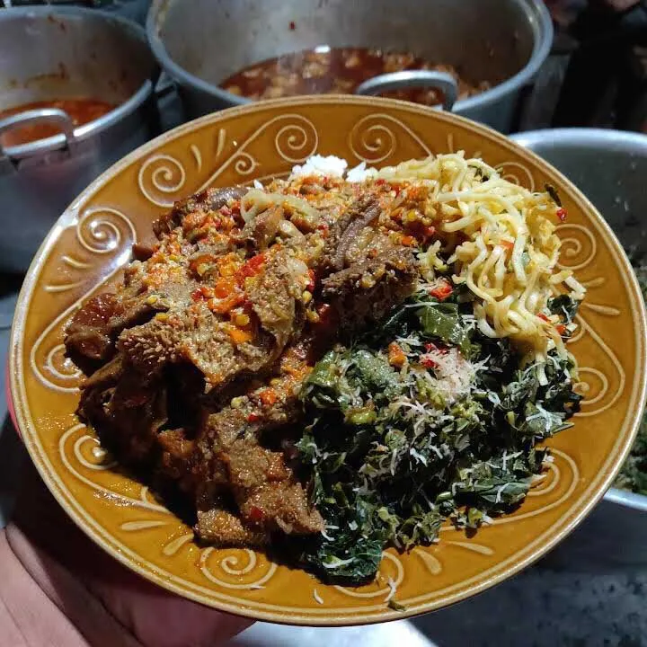
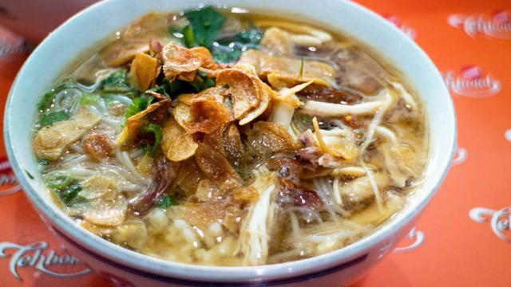
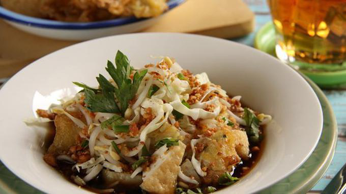
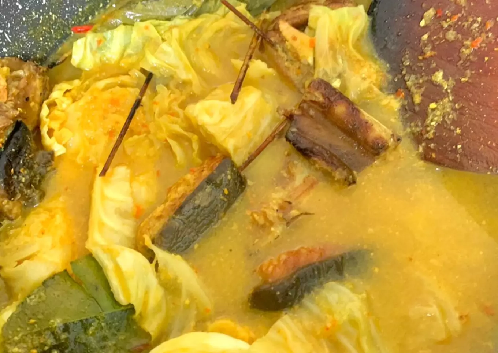
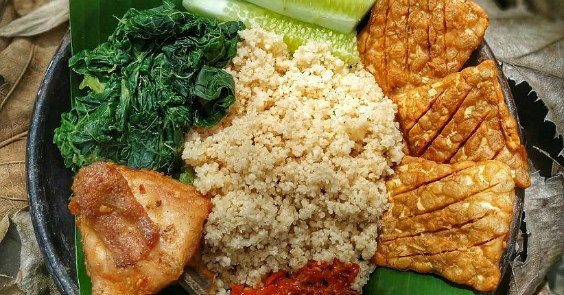

Pacitan mungkin kurang terdengar karena keindahan alamnya begitu terkenal. Dengan berbagai pesona alam yang
ditawarkan daerah ini, nama kuliner Pacitan pun tidak sebesar gaung wisata alamnya. Padahal, di samping menikmati
keindahan alamnya, kamu juga bisa mencicipi berbagai hidangan lezat khas Kota 1001 Gua ini.
Makanan khas Pacitan ini terdiri dari masakan berat hingga jajanan. Walaupun ada beberapa makanan khas Pacitan yang
memiliki jenis yang sama dengan daerah lain, tapi soal rasa dan pemilihan bumbu tentunya berbeda. Makanan khas
Pacitan seperti soto hingga kupat tahu memiliki racikan sendiri yang membuat rasanya berbeda.
Wisata Kuliner Pacitan bisa menjadi pilihan di kala berlibur. Setelah penat bermain di pantai atau di gua, kamu bisa
menyinggahi berbagai wisata kuliner Pacitan untuk mengisi tenaga dan beristirahat sejenak. Tentunya kamu akan
menikmati sajian khas yang unik.
-
Sego Gobyos Pacitan

Wisata kuliner Pacitan yang pertama adalah Sego Gobyos. Sego Gobyos ini merupakan makanan yang sederhana berupa
campuran nasi yang ditambahkan sayur daun keningkir, serta tambahan lauk yang bisa dipilih, seperti tahu, tempe
bacem, kerupuk, hingga opor ayam.
Keunikan dari Sego Gobyos sini adalah kuah khusus gobyos yang membuat kuliner ini beda dari yang lainnya.Kuliner
yang biasanya dijadikan makan malam ini disebut sego gobyos karena mencicipinya bisa membuat kamu berkeringat.
Hal ini terkait dengan rasa pedas yang ditawarkannya.
-
Soto Pacitan

Soto Pacitan merupakan salah satu wisata kuliner Pacitan yang tidak boleh kamu lewatkan. Walaupun soto merupakan
menu makanan yang hampir setiap daerah memilikinya, Soto Pacitan ini tentunya menawarkan rasa yang berbeda yang
membuatnya istimewa.
Soto Pacitan ini disajikan dengan tambahan seledri, bawang goreng, kecambah, kecap dan kacang goreng. Tambahan
kacang goreng menjadi pembeda utama Soto Pacitan dengan soto lainnya. Harganya yang cukup terjangkau juga bisa
menjadi solusi buat kamu yang mempunyai budget terbatas.
-
Kupat Tahu

Walaupun banyak orang mengidentikkan kupat tahu dengan daerah Magelang, namun kupat tahu di Pacitan rasanya
tidak kalah enak. Kupat tahu adalah wisata kuliner Pacitan berupa makanan yang berisi potongan-potongan kupat
(lontong) dan juga tahu. Dalam penyajiannya biasanya ditambahkan taburan kacang goreng, seledri dan taoge serta
disiram dengan kuah penuh bumbu yang nikmat.
Kupat tahu Pacitan memiliki cita rasa khas dengan kuah kecap yang kental menjadikannya memiliki rasa manis yang
menonjol, lalu air bawang putih menambahkan sedikit rasa gurih. Umumnya kupat tahu di Pacitan dimakan dengan
kerupuk udang.
-
Sayur Kalakan

Sayur kalakan memiliki sensasi pedas yang berbahan baku ikan laut. Sayur kalakan adalah daging ikan laut, bisa
kelong, ikan tuna atau lainnya yang ditusuk mirip sate, kemudian yang dimasukkan dalam santan yang sudah
dicampuri bumbu pedas. Hal inilah yang membuat Sayur Kalakan identik dengan rasanya yang pedas.
Selain itu, bentuknya yang unik mirip sate ditusuk, membuat sayur kalakan yang berbahan baku daging ikan laut
yang diasap atau dibakar ini makin unik.
-
Tiwul

Tiwul
Terbuat dari ketela pohon yang telah dikeringkan, tiwul bisa menjadi makanan pokok karena memiliki kandungan
kalori yang rendah dibanding nasi. Umumnya tiwul di Pacitan disajikan bersama sambal terasi atau pun sambal
bawang lengkap dengan lalapan.
-
Punten
Wisata kuliner Pacitan selanjutnya adalah Punten. Punten merupakan makanan yang terbuat dari beras yang dimasak
dengan santan kemudian ditumbuk hingga halus. Setelah itu disajikan dalam bentuk potongan kotak-kotak. Rasanya
sangat gurih dan juga cocok untuk mengganjal perut yang sedang lapar.
Punten paling sedap saat dinikmati dengan cara dicocolkan pada sambal terasi.